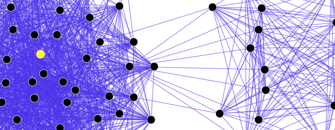
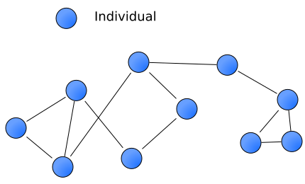
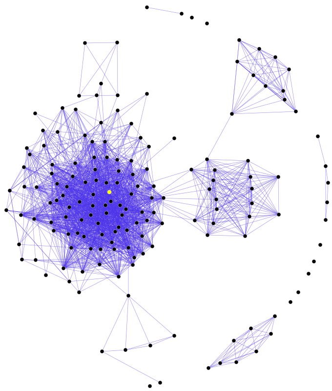

Advanced Web Concepts
In CGP Grey’s “This Video Will Make You Angry,” he explains that ideas spread online like germs. What kind of content does he say spreads fastest?
In CGP Grey’s video, he uses a diagram of connected groups to show how angry content travels. What does he call the groups that form around shared beliefs online?
In The Social Dilemma trailer, former tech employees warn that social media platforms are designed primarily to do what?
In The Social Dilemma trailer, one interviewee summarizes the business model with a famous line. Which one?
In the Wall Street Journal TikTok investigation, how did the researchers figure out what the algorithm was doing?
In the Wall Street Journal video, what single user action did the algorithm rely on most heavily to personalise the feed?

Every time you open TikTok, Instagram, or YouTube, a recommendation algorithm decides what you see. It is a set of mathematical instructions that predicts which posts, videos, or stories you are most likely to interact with — and places those at the top of your feed.
The algorithm learns by observing everything you do: what you tap on, how long you watch, what you skip, what you like, and what you share. It feeds all of these signals into a machine-learning model that builds a profile of your interests. The more you use the app, the sharper the profile becomes — and the more accurately the algorithm can guess what will keep you scrolling.
Importantly, the algorithm does not show you everything that gets posted. It filters out content it thinks you won’t engage with, creating a curated experience unique to you. Two people following the exact same accounts can see very different feeds.

Algorithms rank content using engagement metrics — measurable signals that indicate how users react to a post. The most common ones are:
Content that generates high engagement gets pushed to more users, which generates even more engagement — a positive feedback loop. This is why emotionally charged, surprising, or controversial posts tend to spread faster than calm, nuanced ones: they trigger stronger reactions, and the algorithm rewards that.

Because algorithms show you more of what you already engage with, they can create what Eli Pariser called a filter bubble — a personalized universe of information where you rarely encounter viewpoints that challenge your own. Over time, your feed starts to look like a mirror reflecting your existing beliefs back at you.
A related concept is the echo chamber: a space where people interact mainly with others who share their views, and where opposing ideas are filtered out or dismissed. Inside an echo chamber, misinformation — false or misleading claims — can spread quickly, because there are fewer people around to question it.
Algorithms don’t deliberately spread lies, but they do amplify content that gets engagement. A sensational headline (“Doctors Don’t Want You to Know This!”) will often outperform a careful, fact-checked article, simply because it provokes more clicks and shares. This is one reason why fake news travels roughly six times faster than accurate reporting on social media, according to research published in Science.
Most social media platforms are free to use. So how do they make money? Through targeted advertising. The longer you stay on the app, the more ads you see, and the more revenue the company earns. This creates a powerful incentive: the platform’s primary goal is not to inform you or connect you with friends — it is to capture and hold your attention.
As the saying goes: “If you’re not paying for the product, you are the product.” Your attention, your data, and your behavioral profile are what gets sold to advertisers. The Social Dilemma, a 2020 documentary, made this argument widely known, featuring former employees of major tech companies who helped build these systems and later raised alarms about them.
The good news: once you understand how the machine works, you can push back. Some practical habits that help:
Critical thinking is your strongest defense. Every time you pause before liking, sharing, or believing a post, you are taking back a small piece of control from the algorithm.
What is the main purpose of a recommendation algorithm on social media?
Why does emotionally charged or controversial content tend to spread faster than calm, nuanced articles?
What is the difference between a filter bubble and an echo chamber?
How do most free social media platforms make money?
Which of these is a practical way to fight back against filter bubbles?
Create an HTML/CSS/JS page that simulates how a social media algorithm reshapes your feed based on your behavior:
const posts = [
{ id:1, text:"New Study: 8 Hours of Sleep Boosts Teen Memory by 20%", cat:"reliable" },
{ id:2, text:"You Won't BELIEVE What This Student Found in the Cafeteria!", cat:"clickbait" },
{ id:3, text:"Scientists Exposed: They've Been Lying About Climate for Decades", cat:"misinfo" },
{ id:4, text:"City Council Votes to Add Protected Bike Lanes Downtown", cat:"reliable" },
{ id:5, text:"This One Trick Lets You Pass Any Exam Without Studying", cat:"misinfo" },
{ id:6, text:"10 Celebrities Who Look COMPLETELY Different Without Makeup", cat:"clickbait" },
{ id:7, text:"Local Library Launches Free Coding Workshops for Teens", cat:"reliable" },
{ id:8, text:"SHOCKING: Phones Are Secretly Recording Everything You Say", cat:"misinfo" },
{ id:9, text:"She Quit Social Media for 30 Days - What Happened Next Is Wild", cat:"clickbait" },
{ id:10, text:"International Space Station Crew Completes 6-Month Mission", cat:"reliable" },
{ id:11, text:"Exposed: The Government Puts Tracking Chips in School Lunches", cat:"misinfo" },
{ id:12, text:"This Dog's Reaction to Its Owner Will Make You CRY", cat:"clickbait" },
{ id:13, text:"UN Report: Global Literacy Rate Reaches All-Time High", cat:"reliable" },
{ id:14, text:"Doctors Are HIDING This Miracle Cure From You", cat:"misinfo" },
{ id:15, text:"We Tried the Viral Food Hack - The Results Were INSANE", cat:"clickbait" }
];Paste your HTML into the HTML panel, CSS into the CSS panel, and JS into the JavaScript panel. Click “Run” to see the result!